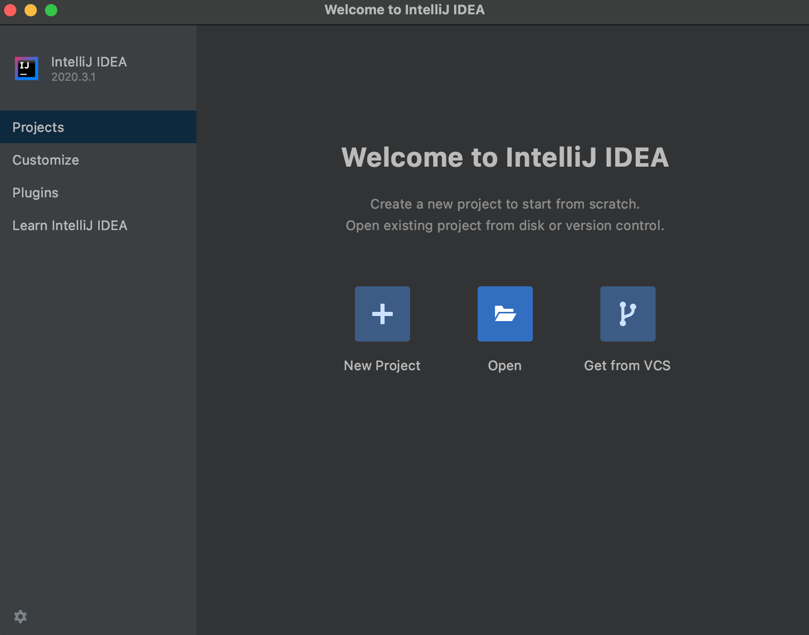
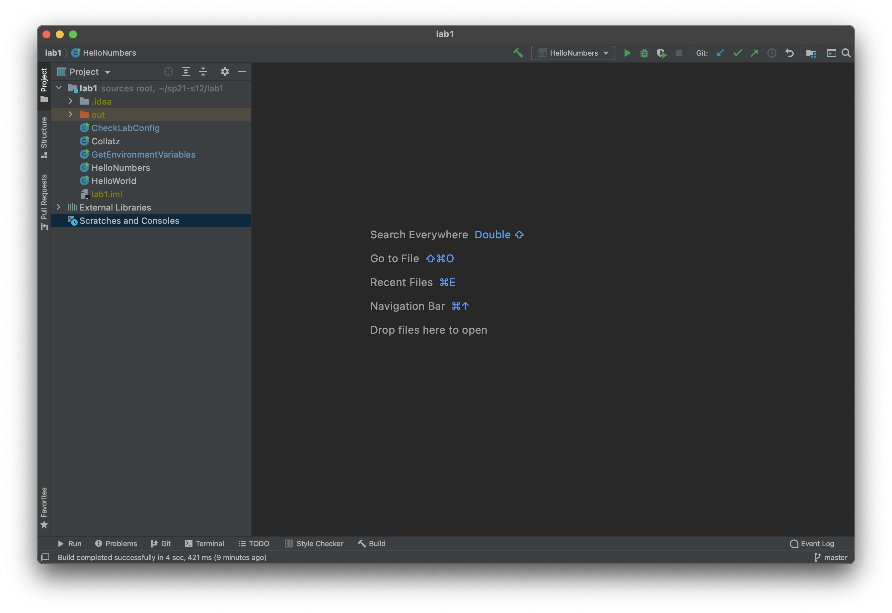
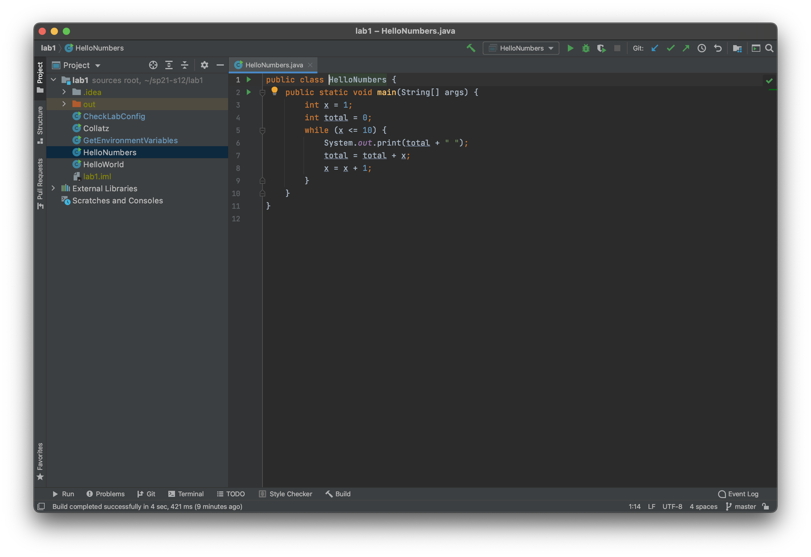
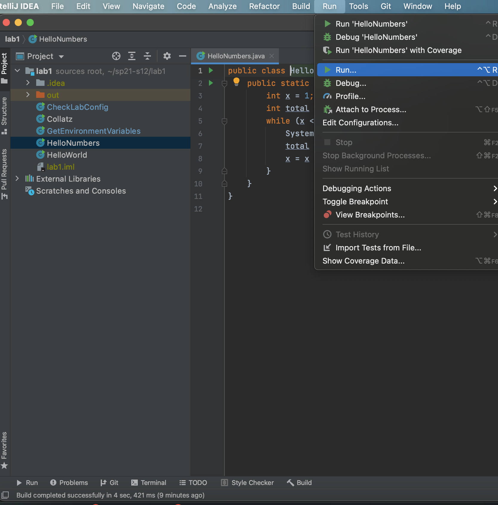
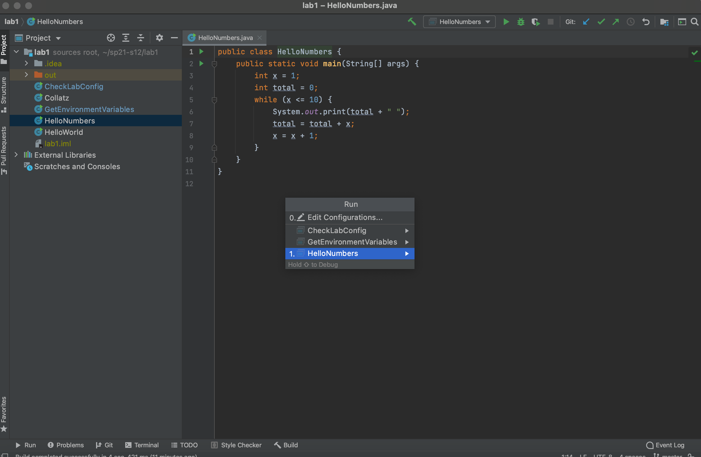
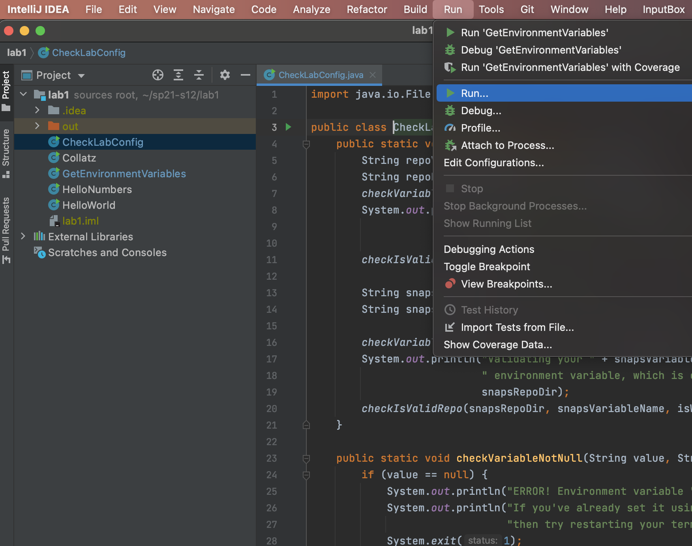
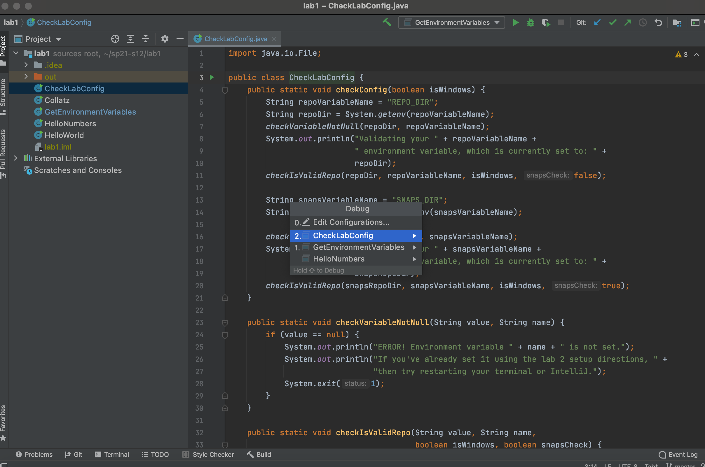
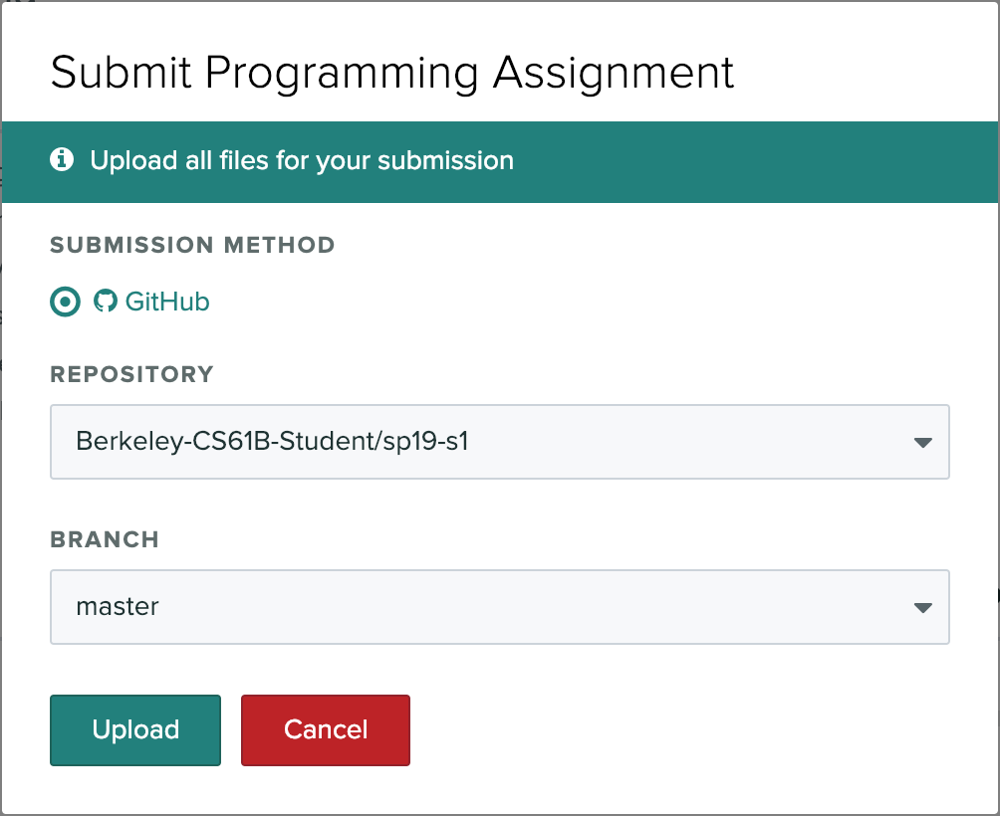

- Before You Begin
- GitHub and Beacon
- A. Getting the Starter Files
- B. Running Code in IntelliJ
- C. Setting up Snaps
- D. Programming Exercise
- E. Pushing Your Work to GitHub
- F. Submitting Lab 1
- G. Verifying Snaps Installation
- Recap
- Josh Hug’s Color Scheme (Optional)
Before You Begin
- Before beginning this lab, complete lab1setup to install software required for 61B. If you get stuck at any point, feel free to post on Ed or attend lab, or come to Office Hours.
-
Be aware that there are a large number of setup steps this first week. Don’t be discouraged, and make sure to ask for help if you’re stuck!
- Warning: This lab runs a little long, and it’s normal if you do not finish during your lab period, especially if you end up having a tricky setup issue that requires a lot of assistance.
- It’s OK to talk to other students while you work on this lab (or any other), but you should ultimately do all the typing/programming/entering-of-commands yourself. There’s a lot of important setup information in this lab that you need to have done independently of anyone else.
GitHub and Beacon
Instead of bCourses, CS61B uses an in-house system for centralizing your grades and student information called Beacon.
In this section, we’ll set up your Beacon account as well as your CS 61B GitHub repository (“repo”), which you will need to submit all coding assignments.
- Create an account at GitHub.com. If you already have an account, you do not need to create a new one.
- Go to the Beacon website and you’ll be guided through a few steps to complete your GitHub repository registration. Please follow them carefully! You must be logged in to your Berkeley account to complete the Google Form quiz. If any errors occur while you’re working through the steps, please let your TA know immediately.
- After completing all of the steps, you should receive an email inviting you to collaborate on your course GitHub repository, accept the email invitation from both emails and you should be good to go. This email will be sent to the email that you used to create your GitHub account, which may not necessarily be your Berkeley email. Hooray! Don’t follow the instructions that GitHub says you might want to do – instead, follow the instructions given later in this lab.
More details about your repository
Your repository will have a name containing a number that is unique to you! For instance, if your repo is called “sp21-s42”, you’ll be able to visit your private repository at https://github.com/Berkeley-CS61B-Student/sp21-s42 (when logged into GitHub) If your repo number is not “42” this link will not work for you. Replace “42” with your own to see your repo on Github.
Additionally, the instructors, TAs, and tutors will be able to view your repository. This means you can (and should!) link to your code when asking private debugging questions on Ed. No other students will be able to view your repository. As a reminder, you may not post code from this course publicly, even after completing the course. Doing so is a violation of our course policies and you might be subject to disciplinary action.
If you’re working with a lab partner, you’ll also receive a separate shared repository that you should use for labs. More details are provided on our Parterships Guide, which you can find on our Course Info page.
Additionally, after registering with Beacon, you will be invited to collaborate on another repo of the form “snaps-sp21-sXXX” - don’t worry about what this repo is for now, just accept the invitation so you have access to it. We will have more information about this repo in a later section of this lab!
A. Getting the Starter Files
For most of the assignments in this class (including this lab), we’ll provide a set of starter files.
To get the starter files, we’ll be using the git version control system, which you’ll learn more about later in this lab and throughout the course. For now, let’s simply use git to get the files for this lab.
If you need help with creating directories, creating files, changing directories, etc., see section C of lab1setup.
-
First, tell Git your name and email address so that your commits are correctly attributed to you. Run the following commands:
Replace “Your Name” with your name, and “you@berkeley.edu” with your email address. You should use the email address that you used to sign up for GitHub. If that’s not your “@berkeley.edu” email address, that’s okay.
$ git config --global user.email "you@berkeley.edu" $ git config --global user.name "Your Name" -
Clone your Berkeley-CS61B-Student organization repository.
- Navigate to the spot in your folders on your computer where you’d like to
start your repository. In the example below, I’m assuming you want all your stuff in a folder named cs61b, but you can pick a different name if you’d like.
$ cd cs61b - Enter the following command to clone your GitHub repo. Make sure to
replace the
s**with the class id you were given when you registered for your repo.$ git clone https://github.com/Berkeley-CS61B-Student/sp21-s**.gitIf you’d like to use SSH instead of HTTPS (and set up your own SSH key), feel free to also do that instead. If you don’t know what any of this means, just use the command above. The advantage of SSH is that you won’t have to type in your GitHub password every time you use your repository.
- Move into your newly created repo! (Make sure you do this part, or the
rest of the steps below will not work correctly.)
$ cd sp21-s**
- Navigate to the spot in your folders on your computer where you’d like to
start your repository. In the example below, I’m assuming you want all your stuff in a folder named cs61b, but you can pick a different name if you’d like.
- Add the
skeletonremote repository. You will “pull” code from this remote repository to get starter code for assignments. Make sure that you are within the newly created repository folder before you continue with these commands.- Enter the following command to add the
skeletonremote.$ git remote add skeleton https://github.com/Berkeley-CS61B/skeleton-sp21.git - Listing the remotes should now show both the
originandskeletonremotes.$ git remote -v - If you get an error that says “Not a git repository”, make sure you’re in the
sp21-s**directory.
- Enter the following command to add the
- You must now “pull” from the
skeletonremote in order to get the starter code for Lab 1. You will also do this when new projects and assignments are released. To do this, use the spookiest command in the whole git toolbox:$ git pull skeleton masterWhat this does is grab all remote files from the repo named
skeleton(which is located athttps://github.com/Berkeley-CS61B/skeleton-sp21.git) and copies them into your current folder.If you get an error similar to “fatal: refusing to merge unrelated histories”, you probably ran GitHub’s suggested commands when you created your repository. To fix this, you can instead run:
$ git pull --rebase --allow-unrelated-histories skeleton masterthis time only.
- If you list the files in your current directory, you’ll see that there is now a folder named
lab1Look in thelab1folder and you’ll see files calledHelloWorld.java,HelloNumbers.java,Collatz.java, and others, that you’ll work with in later parts of this lab.
B. Running Code in IntelliJ
IntelliJ is an IDE (Integrated Development Environment). It includes a text editor as well as a whole lot of extra features to make writing code easier. Let’s try it out first on our lab1 folder.
-
Upon opening IntelliJ, click on the “Open” option. 
-
Find and choose your lab1 directory, then press the OK button. Once you’ve pressed finish, you should see something really similar to the following image. You may need to click the little triangle next to
lab1in the top left to get the source files (HelloWorld,HelloNumbers,Collatz,GetEnvironmentVariables, andCheckLabConfig) to show up. If you don’t see the sidebar, go to View → Tool Windows → Project, or select “Project” on the left toolbar. 
Note: The first time you start up IntelliJ it might take some time indexing files. This may take a few minutes. There should be a little progress bar in the bottom right. Some steps might not work until this is done.
-
Double click on HelloNumbers and you’ll see your HelloNumbers code appear. Your color scheme won’t look like what is shown in the picture below (which is the official Josh Hug approved color scheme, called Sunburst). If you think you’d like to use Sunburst instead, see the very end of this lab for an optional setup. There should be no errors (code highlighted in red). If you see any errors, please post to Ed or ask your lab TA. 
-
Next, let’s run your HelloNumbers. To do this, click “Run”, then click the “Run…” option. 
-
This will bring up two choices, one called “Edit Configuration”, and one called “HelloNumbers”. You may see other options for files we will interact with later this lab. IntelliJ supports all sorts of complicated configuration options for running Java programs, but we’re happy with the default here, so let’s just click on the one that says “HelloNumbers”. 
Look at the output the program generated! You should see some nice numbers printed out! Hello Numbers!
C. Setting up Snaps
You have two course repositories, one standard repository (e.g. sp21-s33) and one Snaps repository (snaps-sp21-s33). Commits to your standard repository are made manually. Commits to the snaps repository are made automatically.
The Snaps repository will act as a safe backup of your work in case you forget to actually make manual commits with git. You’ll push your Snaps repository after every project, which will allow us to release stats like the average time it took for students to complete each project (or each part of each project). It will also allow us to identify parts of projects that are much more confusing or time consuming that we anticipated. And it will also allow us to understand if the workload we’ve assigned is too high, so that we can tune down the course difficulty if we’ve overburdened you. If you are strongly opposed to pushing your Snaps repository, please contact your mentor GSI at that time. There will be more information about mentor GSIs during the second week of class
We don’t want you to feel like we’re looking over your shoulder! Thus, we will not be manually analyzing Snaps repositories, nor will we use any of the Snaps repository information for plagiarism detection. That is, all analysis will be conducted via bulk analytical tools that are unaware of your identity, and nothing in your Snaps repository will be used against you in any way.
At the very end of the semester, you will also have the opportunity to opt-in to a research project. Details will be provided at that time.
In this section of lab you will set up your computer to allow the creation of the Snaps backups.
Getting the Snaps Repo
You should have gotten and accepted an invitation to collaborate on a snaps-sp21-s*** repo. If you have not accepted it, please do not proceed until you do. If you can’t find the invitation in your email inbox (remember, the email account attached to your GitHub account, which may not necessarily be your Berkeley email), please post on Ed or come to lab or Office Hours, so we can help you.
First, we will clone the snaps repo to your computer. In your terminal (Git Bash on Windows), navigate to your home directory: cd ~. Then, run the following command, replacing *** with your repo number:
git clone https://github.com/Berkeley-CS61B-Student/snaps-sp21-s***
If you run ls, you should now see the snaps-sp21-s*** folder.
IMPORTANT: Never complete assignments in this folder. Gradescope tests will always fail if you submit code from the snaps folder. You should only interact with your sp21-s*** folder.
Setting Up Environment Variables
Next you’ll need to set up some environment variables. The precise steps to take depend on your operating system.
Installing the Snaps Plugin
Mac OS and Linux
- After setting up the environment variables above, restart IntelliJ, and all terminal windows (close them and open a new one), so the variables can take effect.
- Go to the IntelliJ welcome window (you may have to click “File → Close Project” to get back to the welcome window)
- Choose “Plugins” (left panel) → “Marketplace” (top middle) → search “CS 61B Snaps”, and install.
- IntelliJ may ask you to restart the IDE (a green “Restart IDEA” button will appear). If it does, restart it.
- Do not ignore the next step.
- Quit intelliJ (regardless of whether it restarted or not in step 4). Yes, even though you may have just restarted it, quit it completely again.
- Open a terminal window, and launch intelliJ by running
idea. Do not run IntelliJ using the OS Gui (e.g. Finder in Mac OS). - Continue to the next section to test your environment variables.
Windows
- After setting up the environment variables above, restart IntelliJ, and all terminal windows (close them and open a new one), so the variables can take effect.
- Go to the IntelliJ welcome window (you may have to click “File → Close Project” to get back to the welcome window)
- Choose “Plugins” (left panel) → “Marketplace” (top middle) → search “CS 61B Snaps”, and install.
- IntelliJ may ask you to restart the IDE (a green “Restart IDEA” button will appear). If it does, restart it.
- Do not ignore the next step.
- Restart IntelliJ again. Yes, even though you may have just restarted it, quit it completely and open it again.
Test Your Environment Variables
After reopening IntelliJ, make sure the lab1 folder is open in IntelliJ. Verify that you set the environment variables correctly by opening CheckLabConfig. Then click Run and go down to the option that says “Run…”.

Now click on the option that contains CheckLabConfig:

This should run the main method of our CheckLabConfig class. If everything is working, you should see a message confirming that you are done with lab 1 set up!
D. Programming Exercise
Open the file called Collatz.java. Try running it and you’ll see the number 5 get printed.
This program is supposed to print the Collatz sequence starting from a given number. The Collatz sequence is defined as follows:
If n is even, the next number is n/2. If n is odd, the next number is 3n + 1. If n is 1, the sequence is over.
For example, suppose we start with 5. Since 5 is odd, the next number is 3x5 + 1 = 16. Since 16 is even, the next number is 8. Since 8 is even, the next number is 4. Since 4 is even the next number is 2. Since 2 is even, the next number is 1. At that point we’re done. The sequence was 5, 16, 8, 4, 2, 1.
Your first task is to write a method as follows: public static int
nextNumber(int n) that returns the next number. For example nextNumber(5) should return 16. This method will be tested by the Gradescope autograder. Make sure to provide a description of the method as a comment. Your description should be contained by /** and */. Comments contained by /** and */ are also called “Javadoc comments” or just “Javadocs”. These comments can span multiple lines if they need the extra space, e.g. the nextNumber Javadocs.
Javadocs may contain optional tags, e.g. @param. We do not require you to use any tags like this in 61B except the @source tag. Use the @source tag any time you receive significant help on a project. The @source tag is not required for HW or lab, though we recommend it anyway, since it’s a good scholarly and professional habit to cite your sources.
Some Java tips:
- The
%operator implements remainder. For example, the value ofx % 4will be0,1,2, or3. - The
==operator compares two values for inequality. The code fragmentif (n % 4 == 1)reads as “if the remainder when dividing n by 4 is equal to 1.”
After writing nextNumber, fill in the main method so that it prints out the Collatz sequence starting from n = 5. For example, if n = 5, your program should print 5 16 8 4 2 1. It’s fine if there’s an extra space after the 1.
Fun fact: For all numbers, the Collatz sequence appears to terminate at 1. So far, however, nobody has been able to prove that this is true for all possible starting values, but all values up to approximately 2^68 have been checked. As noted in the wikipedia article, mathematician Jeffrey Lagarias noted that the Collatz conjecture “is an extraordinarily difficult problem, completely out of reach of present day mathematics.”
E. Pushing Your Work to GitHub
We’ll use the Git tool in this class to store a copy of your work in what is known as a “repository”. As we’ll see in a later lab, you’ll also be able to retrieve old versions of your work from your repository using Git. In fact, Git is the most popular code version control software used in the real world, and if you go into software engineering, it is almost guaranteed you’ll use this tool every day.
The private company GitHub has servers that are able to store git repositories, and their website github.com provides a convenient web interface to view repositories.
In this section, we’ll see how to “push” your repository to GitHub.
First start by going to the GitHub URL corresponding to your repository. For example, if your repository number is 343, you’d go to https://github.com/Berkeley-CS61B-Student/sp21-s343. Go to the URL corresponding to your repository. You’ll see there’s nothing there. If you try other repository numbers, you’ll see that you do not have access. That is, only you (and the course staff) can view your respository.
To push your code, we’ll be using the following three commands: add, push, and commit. Don’t worry about the details yet, and simply follow the steps below:
- Open a terminal window and navigate to the folder containing your
sp21-s***repository, NOT yoursnaps-sp21-s***repo. If you type the “ls” command, you should see your lab1 folder sitting there. - Enter the following command to confirm that you’re in the right directory.
$ git statusIf everything is working correctly you should see something like:
On branch master Changes not staged for commit: (use "git add <file>..." to update what will be committed) (use "git restore <file>..." to discard changes in working directory) modified: lab1/Collatz.javaWhat Git is telling you is that you’ve changed something about your lab1/Collatz.java folder that GitHub has not recorded. Make sure that it says lab1/Collatz.java, not just Collatz.java. If it says just Collatz.java, you should use
cd..to go up one directory. - Enter the command
$ git add lab1/* - Enter the following command to confirm that add worked properly.
$ git statusIf everything is working correctly, you should see something like:
On branch master Changes to be committed: (use "git restore --staged <file>..." to unstage) modified: lab1/Collatz.javaNow Git is telling you that it is acknowledging that you want to record the changes you made to Collatz.java.
- Enter the command
$ git commit -m "done with Collatz"When you do this, Git will make a recording of the changes you made to Collatz.java. It will also record the message “done with Collatz” along with the recording. These messages can be helpful if you’re looking to find a specific change at some point in the past. We’ll discuss further in a later lab. It will also print some output the terminal, and you’ll see something like below, though the number of insertions and deletions may be different.
[master e2c138b] done with Collatz 1 file changed, 15 insertions(+), 1 deletion(-) - As before, enter the git status command.
$ git statusIf commit worked correctly, you should see something like:
On branch master nothing to commit, working tree cleanThe fact that the “working tree” is “clean” means that all of your work is backed up.
- Refresh the URL for your repo on GitHub.com. You’ll see that your changes STILL aren’t showing up. This is because we have one last step.
- Enter the command:
$ git push origin master - Refresh the URL for your repo on GitHub.com. You should see that your changes to Collatz.java are now visible, along with the message you entered.
Note that normally you won’t enter git status after every single command. We were only doing this to make sure that you entered the commands correctly. The three commands that we entered that were actually necessary to get your code on GitHub are summarized below:
git add lab1/*
git commit -m "done with Collatz"
git push origin master
A lot of questions probably come to mind:
- Why is it useful to have to manually track my changes rather than just using a tool like Dropbox that automatically makes backups?
- What do these individual commands do? If commit made a recording of my work, but it wasn’t visible until I entered push, then where was the backup made?
- Why does it take 3 commands instead of just one? Why not just a single command like ‘git upload -m “done with Collatz”’ or whatever?
Let’s address them in turn:
Q: Why wouldn’t people just use Dropbox (or similar)? Dropbox is backing up everything at sporadic intervals. When writing programs, we often want to make backups at specific times and only of specific files. For example, when you finally get a program working, you might want to back it up at that point so you can come back to it if you break it later. Also the ability to add a message makes it easy to organize the backups so you can find the ones you want.
What does add do? Add marks a file (or set of files) as something you want to backup.
What does commit do? Commit creates a backup with the given message.
If commit makes a backup but not to GitHub, where did it back up my files? On your own computer!
What good is a backup on your own computer? If you want to go back to an old version, you can do that using git using other commands. By storing the backup locally, restoring old backups is very fast and doesn’t require an internet connection.
What if my computer dies, isn’t the backup made by commit lost? Yes. That’s why there’s a push command.
Why not do add, commit, and push in one command? Sometimes you only want to add a small number of files, so you might call add on only those files before finally doing a commit. And sometimes you want to make commits but don’t want to push, for example because you don’t have internet access or because you’re working on code that is too sensitive to be placed on any internet site.
How do I see the history of old backups and how do I restore them? If you want to see old commits, you can use git log, and you can use git checkout to restore old copies of your code. We’ll cover these later. Alternately you can also use the web interface at GitHub.com to explore and even download old copies.
We will come to understand git better throughout the semester.
Bonus: As an analogy for those of you have seen the 1984 film Ghostbusters (which I watched literally every day as a small kid), the add command is somewhat like using your proton accelerator on a ghost (or ghosts), the commit command is a somewhat like pulling the ghost (or ghosts) into the trap, and the push command is somewhat like unloading the trap into the Containment Unit.
F. Submitting Lab 1
The last step is to submit your work with Gradescope. Gradescope is the site that you’ll use to submit homework, lab, and project assignments. To sign up for Gradescope (if you haven’t already), head to gradescope.com and click on the white “Sign up for free” button in the middle. You should use your Berkeley email. You should have already been enrolled in our Gradescope page with your Berkeley email. If you have not been added to Gradescope yet, you can refer to our welcome post on Ed for an enrollment code.
Once you’re enrolled in the class on Gradescope, click on “Lab 1: Welcome to Java” to submit your code.
After clicking this button, you’ll be taken to a screen where you select your repository and branch (shown below). The first time you do this, you’ll have to link your GitHub account to Gradescope (similar to what you did on the registration website). Click the “Connect to GitHub” button and follow the instructions.
Now select your repository and branch. If your repository is “sp21-s57”, you’ll select “sp21-s57” in the top box, and in the bottom box you’ll pick “master”.
Later, you can create your own “branches” (as described in a later optional part of a 61Blab) if you want those graded instead, though that won’t be required in 61B.

Now press “Upload” to submit!
Please report any issues you may have to Ed. Entire error messages and/or screenshots are welcome.
Important: We HIGHLY encourage you to make frequent commits! Lack of proper version control will not be considered an excuse for lost work, particularly after the first few weeks.
G. Verifying Snaps Installation
In your terminal, run the following commands, one by one:
cd $SNAPS_DIR
git push
Now, in Gradescope, you will see that Lab 1 has another grader called “Lab 1A: Snaps Checkoff”. Click on this button, and choose “Github” under “Submission Method”.
This time, choose your snaps-sp21-s*** repo and NOT your sp21-s*** repo, and hit “Submit”.
If you pass these grader tests, you have set up your computer correctly. Yay! If you didn’t pass this grader, try to repeat the steps in part C of this lab and/or this section more carefully, or come to Office Hours. Passing this grader is required for getting full credit on Lab 1.
Note that this is one of the few times you will make a submission using your Snaps repo, and we will always explicitely tell you to do so when necessary. Otherwise, always work on and submit assignments from your sp21-s*** repo.
Recap
-
The IntelliJ IDE is what we’ll be using to run Java code this semester.
-
Git is a version control system that tracks the history of a set of files in the form of commits.
-
Commit often and use informative commit messages.
-
Pull from the
skeletonremote repository to get or update starter code for assignments. -
Use Gradescope to submit homework, labs, and projects.
Josh Hug’s Color Scheme (Optional)
I’m not a big fan of the default IntelliJ colors, so I made my own color scheme, which is a very close imitation of the extremely good Sunburst theme for Sublime. To use my theme, download hug_sunburst, and import it using the “File→Manage IDE Settings→Import Settings” option in IntelliJ. You might end up with large text, which I use for recording videos. To adjust the size of the font in Intellij to your liking, see this link.